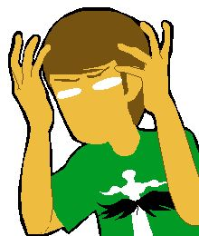
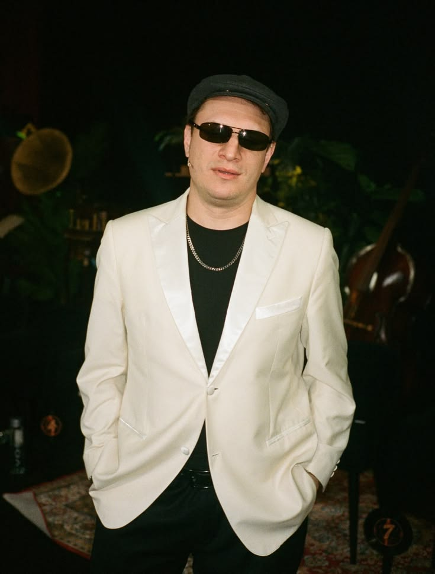
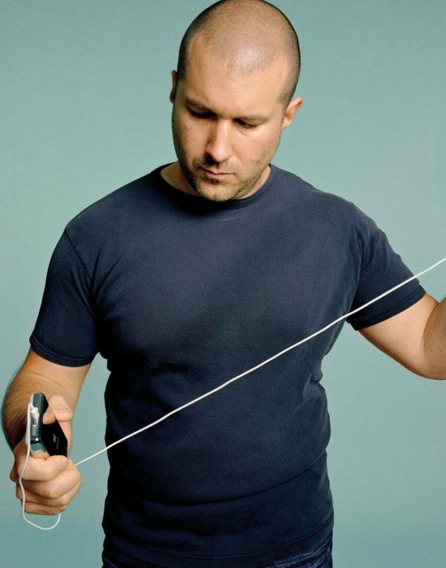

nice bro list:

Andrew Hussie
Человек который создал Homestuck. Мы очень благодарны ему за это).
Человек который создал Homestuck. Мы очень благодарны ему за это).

Илья Сатир
Сейчас один из главных юмористов в РУнете, очень благодарим его за хорошие шутки.
Сейчас один из главных юмористов в РУнете, очень благодарим его за хорошие шутки.

Johnny Ive
Наверное самый усппешный дизайнер, через него проошло очень много идей apple которые он воплощял.
Наверное самый усппешный дизайнер, через него проошло очень много идей apple которые он воплощял.